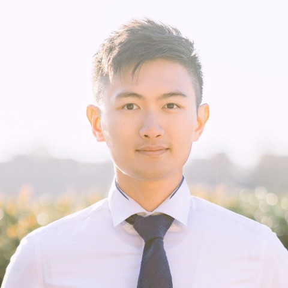

I build backend systems that hold up under real load, and the AI that runs on them.
Senior software engineer at Tesla. I work mostly in Go, Kubernetes, gRPC and Kafka, and lately with LLMs. Outside work I co-founded Poyeah, a social travel app.

Based in San Francisco. UCLA Computer Science, 2023.
Things I build with friends and on my own time. Most of them run on free-tier cloud, so a lot of the engineering is about making small machines do a lot. Each one has an architecture diagram at the top of the page.
Poyeah
Co-founder, backend and infrastructure
A social travel app for iOS and Android in English and Traditional Chinese. I lead a team of four and moved the backend to Oracle Kubernetes when the old host kept running out of memory.
React Native
Spring Boot
FastAPI
AstraDB
Kubernetes
Cateteria
Solo
An iOS app for cat owners: profiles, food inventory and feeding schedules. Deployed with Helm and Argo CD on my own Kubernetes cluster.
Flutter
FastAPI
AstraDB
Firebase Auth
Argo CD
Flight pipeline
Solo, open source
Event-driven Go services that ingest Hong Kong airport and OpenSky flight data through Kafka and post a daily summary of delays and routes to X and Threads.